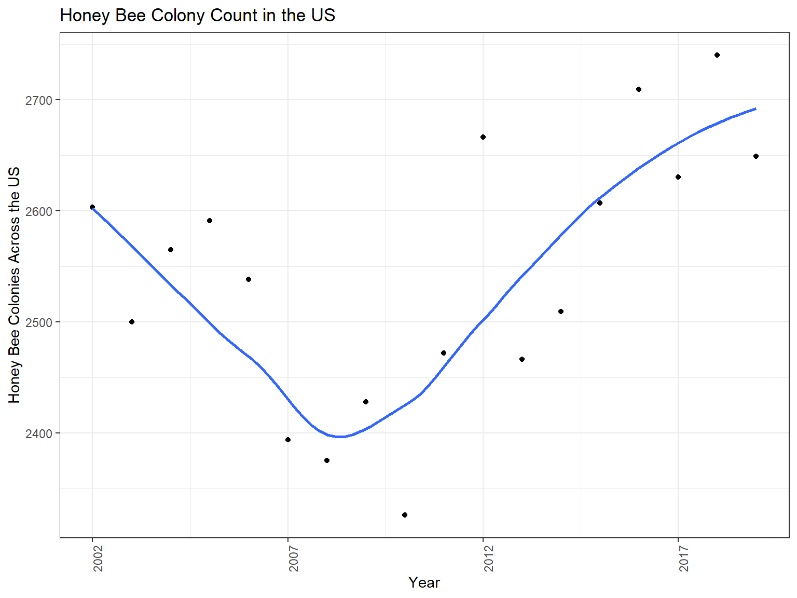
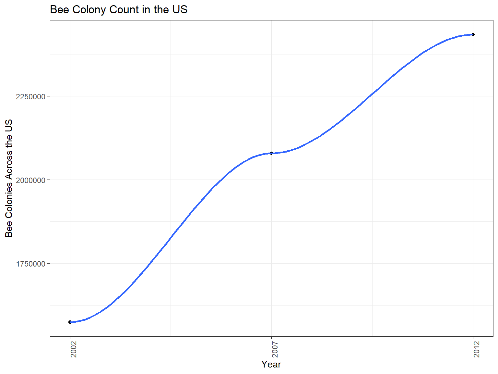

Analysis and Visualization
clean_bee_data = read_csv("./data/clean_bee_data.csv")## Parsed with column specification:
## cols(
## X1 = col_double(),
## year = col_double(),
## state = col_character(),
## honey_producing_colonies = col_double(),
## yield_per_colony = col_double(),
## production = col_double(),
## stocks = col_double(),
## price_per_pound = col_double(),
## production_value = col_double()
## )# honey bee population for country by year
clean_bee_data %>%
mutate(year = as.numeric(year)) %>%
group_by(year) %>%
summarise(n = sum(honey_producing_colonies)) %>%
ggplot(aes(x = year, y = n)) +
geom_point() +
geom_smooth(se = FALSE) +
theme(axis.text.x = element_text(angle = 90)) +
labs(
title = "Honey Bee Colony Count in the US",
x = "Year",
y = "Honey Bee Colonies Across the US") +
scale_x_continuous(
breaks = c(2002, 2007, 2012, 2017))## `geom_smooth()` using method = 'loess' and formula 'y ~ x'
bee_county = read_csv("./data/bee_county.csv")## Parsed with column specification:
## cols(
## X1 = col_double(),
## year = col_double(),
## state = col_character(),
## state_ansi = col_character(),
## ag_district = col_character(),
## ag_district_code = col_double(),
## county = col_character(),
## county_ansi = col_character(),
## colony_count = col_number(),
## cv_percent = col_character(),
## state_county_fips = col_character()
## )bee_county %>%
mutate(colony_count = as.numeric(colony_count)) %>%
drop_na(colony_count) %>%
group_by(year) %>%
summarise(n = sum(colony_count)) %>%
ggplot(aes(x = year, y = n)) +
geom_point() +
geom_smooth() +
theme(axis.text.x = element_text(angle = 90)) +
labs(
title = "Bee Colony Count in the US",
x = "Year",
y = "Bee Colonies Across the US") +
scale_x_continuous(
breaks = c(2002, 2007, 2012))## `geom_smooth()` using method = 'loess' and formula 'y ~ x'
top_pesticides = read_csv("./data/top_pesticides.csv")## Parsed with column specification:
## cols(
## X1 = col_double(),
## compound = col_character(),
## year = col_double(),
## epest_low_kg = col_double(),
## epest_high_kg = col_double(),
## state_fips = col_character(),
## county_fips = col_character(),
## state_county_fips = col_character()
## )top_pesticides %>%
group_by(compound, year) %>%
na.omit(epest_high_kg) %>%
summarise(n = sum(epest_high_kg)) %>%
ggplot(aes(x = year, y = n, color = compound)) +
geom_point() +
geom_smooth(se = FALSE) +
theme(axis.text.x = element_text(angle = 90)) +
labs(
title = "Pesticide Use in the US",
x = "Year",
y = "Weight of Pesticide used in the US (kg)"
)## `geom_smooth()` using method = 'loess' and formula 'y ~ x'
# high range of pesticide use
top_pesticides %>%
group_by(year) %>%
na.omit(epest_high_kg) %>%
summarise(n = sum(epest_high_kg)) %>%
ggplot(aes(x = year, y = n)) +
geom_point() +
geom_smooth(se = FALSE) +
theme(axis.text.x = element_text(angle = 90)) +
theme(axis.text.x = element_text(angle = 90)) +
labs(
title = "Pesticide Use in the US",
x = "Year",
y = "Weight of Pesticide used in the US (kg)"
)## `geom_smooth()` using method = 'loess' and formula 'y ~ x' #low range of pesticide use
top_pesticides %>%
group_by(year) %>%
na.omit(epest_low_kg) %>%
summarise(n = sum(epest_low_kg)) %>%
ggplot(aes(x = year, y = n)) +
geom_point() +
geom_smooth(se = FALSE) +
theme(axis.text.x = element_text(angle = 90)) +
theme(axis.text.x = element_text(angle = 90)) +
labs(
title = "Pesticide Use in the US",
x = "Year",
y = "Weight of Pesticide used in the US (kg)"
)## `geom_smooth()` using method = 'loess' and formula 'y ~ x'#library(maps)
#map(database = "United States")#library(choroplethr)
#library(choroplethrAdmin1)
#get_admin1_regions("united states of america")state and pesticide in one graph
merged_state_data %>% mutate(year = as.numeric(year.x)) %>% group_by(year, compound) %>% summarise(colonies = sum(honey_producing_colonies), pesticides = sum(high)) %>% ggplot(aes(x = year, y = pesticides, color = compound) + geom_point() + geom_smooth(se = FALSE) + theme(axis.text.x = element_text(angle = 90)) + labs( title = “Honey Bee Colony Count in the US”, x = “Year”, y = “Honey Bee Colonies Across the US”)
library(choroplethrMaps)
data(state.map)
state.map =
state.map %>%
filter(region != "alaska", region != "hawaii")
merged_state_data = read_csv("./data/merged_state_data.csv")## Parsed with column specification:
## cols(
## X1 = col_double(),
## year.x = col_double(),
## state = col_character(),
## state_fips.x = col_double(),
## honey_producing_colonies = col_double(),
## yield_per_colony = col_double(),
## production = col_double(),
## compound = col_character(),
## low = col_double(),
## high = col_double()
## )merged_state_data_map =
merged_state_data %>%
mutate(state = str_to_lower(state)) %>%
rename(region = state)
state_map_data = left_join(state.map, merged_state_data_map, by = "region")
honey_bee_colony_map =
ggplot(state_map_data, aes(long, lat, group = group, fill = honey_producing_colonies)) + geom_polygon(color = "black") + theme_void() + labs(title = "Honey Producing Colonies") + coord_map(projection = "bonne", lat0 = 50) + theme(plot.title = element_text(hjust = 0.5))
honey_bee_colony_map
state_chlorpyrifos =
merged_state_data %>%
mutate(state = str_to_lower(state)) %>%
rename(region = state) %>%
filter(compound == "CHLORPYRIFOS")
state_map_chlorpyrifos = left_join(state.map, state_chlorpyrifos, by = "region")
chlorpyrifos_map =
ggplot(state_map_chlorpyrifos, aes(long, lat, group = group, fill = high)) + geom_polygon(color = "black") + theme_void() + labs(title = "Chlorpyrifos") + coord_map(projection = "bonne", lat0 = 50) + theme(plot.title = element_text(hjust = 0.5))
chlorpyrifos_map